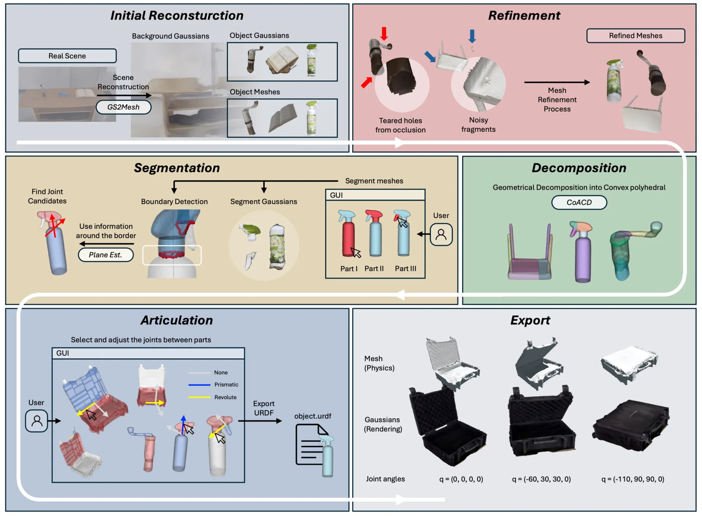
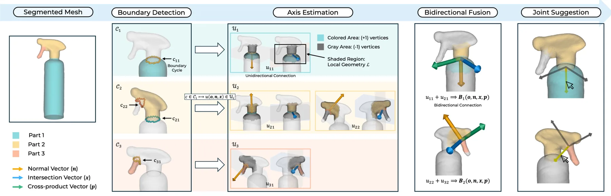
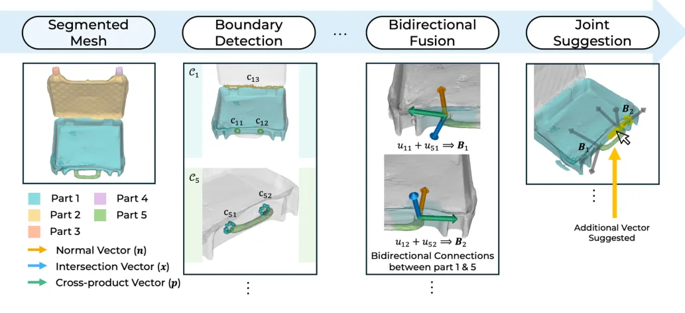
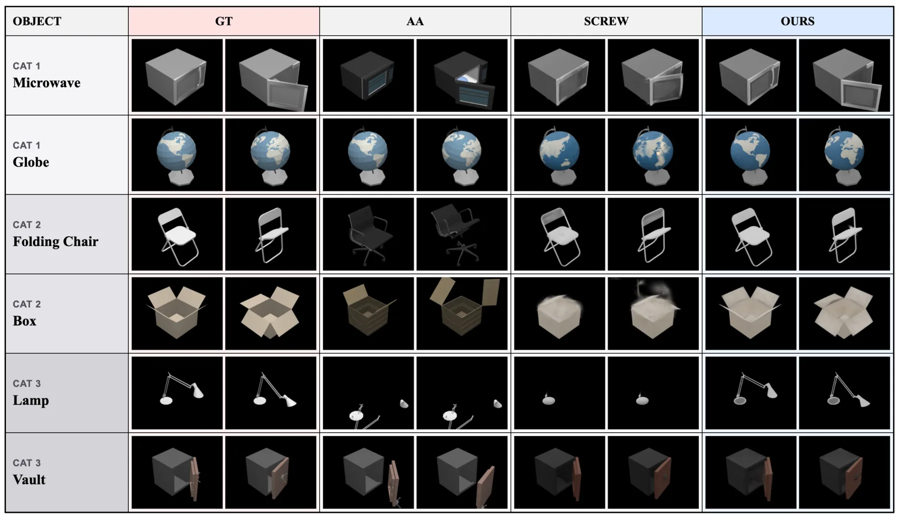
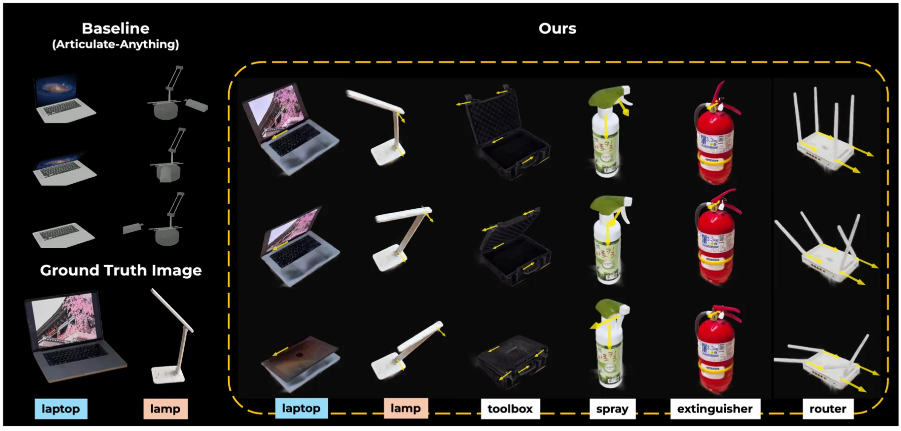
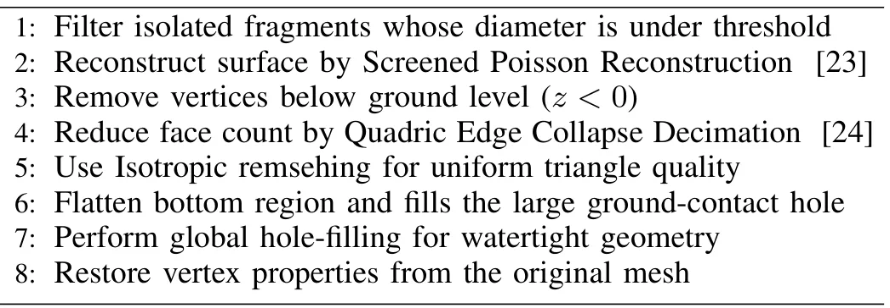
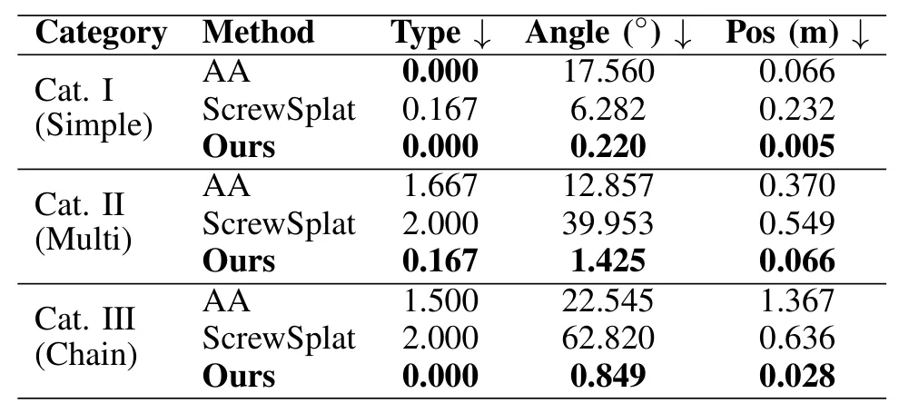
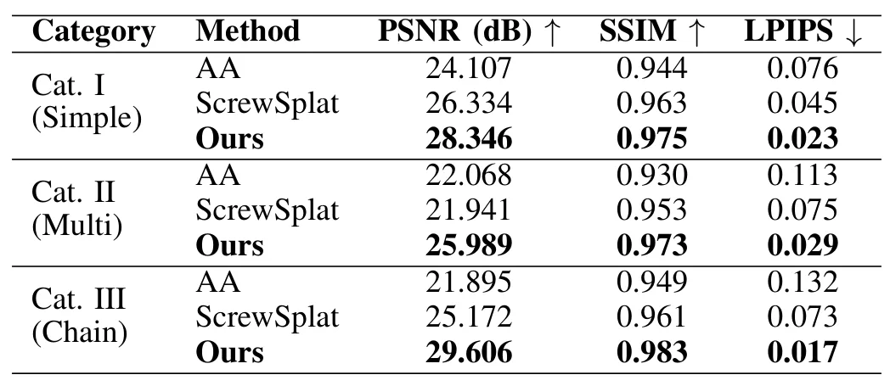
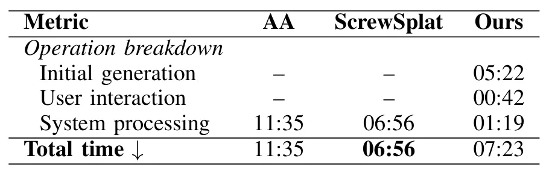

RORA：带关节结构的真实感物体重建RORA: Realistic Object Reconstruction with Articulation
覆盖三维重建、3DGS、物理网格和机器人仿真资产，端到端价值明确；依赖人工分组，关节成功率与物理参数完整性需核查。
一句话工作总结
从静态视频构建 mesh–3DGS 混合关节资产，以边界几何自动建议关节轴，服务 real-to-sim。
摘要
RORA 从单段静态物体视频重建可用于仿真的带关节资产，输出结合照片级 3DGS 和物理交互网格的混合表示。流程先进行凸分解和用户分组以获得部件，再把 3D Gaussians 绑定到对应网格；自动关节建议算法根据局部边界几何计算候选关节轴，供用户选择。作者在 PartNet-Mobility 与真实物体上验证，并将资产部署到 Unreal Engine 和 NVIDIA Isaac Sim。
Replicating real-world environments into simulation by realistic visual representation like NeRF and 3D Gaussian Splatting (3DGS) has emerged as an effective strategy to reduce the sim-to-real gap in robot learning. However, implementing object articulation during the real-to-sim process is still a challenging task. Existing motion tracking or learning based articulation methods shows low success rates on complex kinematic structures having multiple joints. Furthermore, those methods require scan of dynamic motion of objects, which makes reconstruction process much complicated. In this work, we propose the first end-to-end pipeline that reconstructs simulation-ready assets with accurate articulation from a single static object video input through suggestion based human-in-the-loop process. Our approach exports a hybrid representation combining 3DGS for photorealistic rendering and mesh-based geometry for physical interaction. In the reconstruction process, our pipeline performs convex decomposition followed by user grouping for intuitive part segmentation, subsequently binding 3D Gaussians to the corresponding mesh parts. An Automatic Joint Suggestion Algorithm then calculates candidate joint axes from local boundary geometries and presents them to users for efficient articulated asset reconstruction. We have shown that our method achieves precise articulation results on partnet-mobility-v0 dataset and real objects. Additionally we presented a potential usage of our framework on robot learning, deploying the reconstructed assets in Unreal Engine and NVIDIA Isaac Sim, demonstrating real-time dexterous hand manipulation tasks.
中文解读摘录
- 原题：Swimm3R: Splatting with Medium-aware SfM for Underwater 3D Reconstruction
- 作者：Minseong Kweon, Junaed Sattar
- 推荐评分：9.2/10
- 核心方法：把空气中几何先验蒸馏到前馈骨干，并用物理 head 联合回归水下成像参数、相机位姿和恢复点云；随后用带 Beta primitives 与散射感知几何梯度的 Underwater Beta Splatting 表示场景。
- 为何值得看：它不是单纯先增强图像再做 SfM，而是把散射、衰减、位姿和几何放进统一框架。论文报告相对 WaterSplatting 平均 PSNR 提升 1.47 dB，RRA@15/RTA@15 分别提高 2.0/2.4 个百分点；需进一步检查 Barbados 数据集规模、跨水体泛化和绝对尺度。
图表/页面预览

{kind=link}

{kind=link}

{kind=link}

{kind=link}

{kind=link}

{kind=link}

{kind=link}

{kind=link}

{kind=link}
